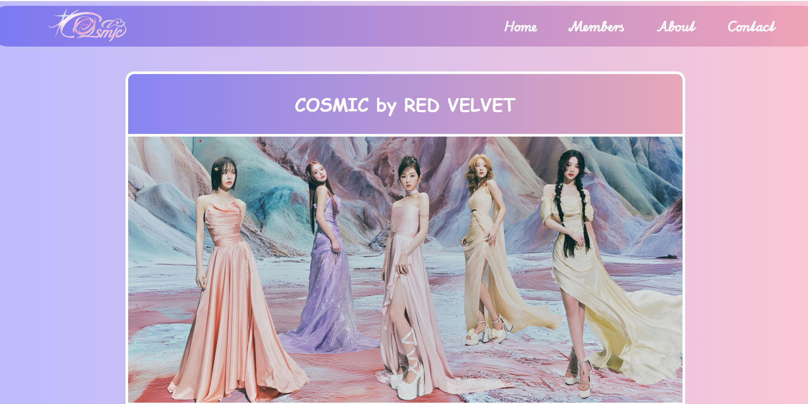
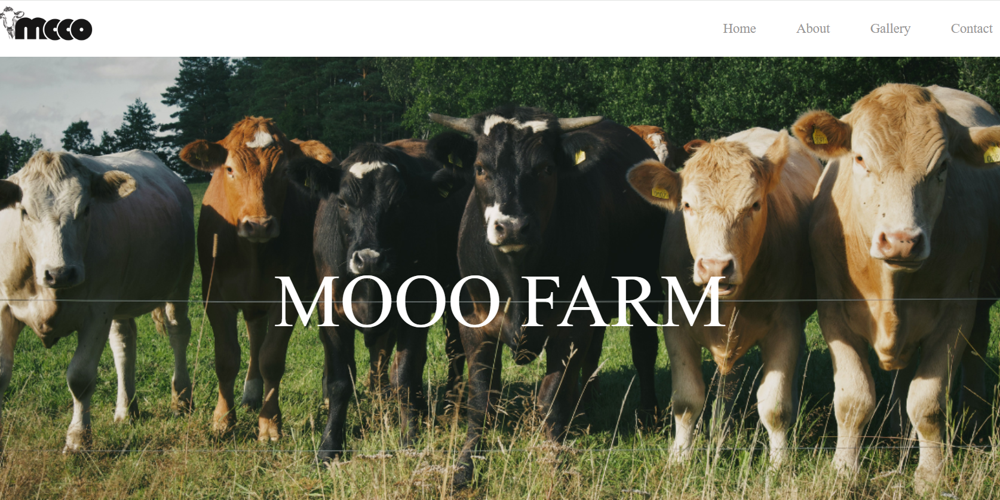
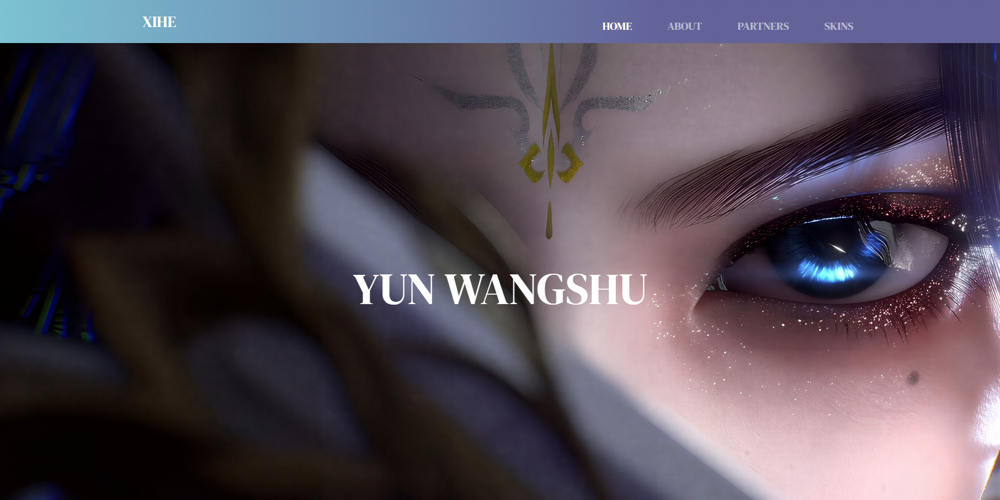
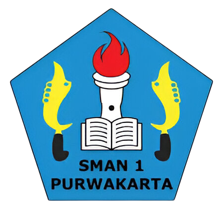
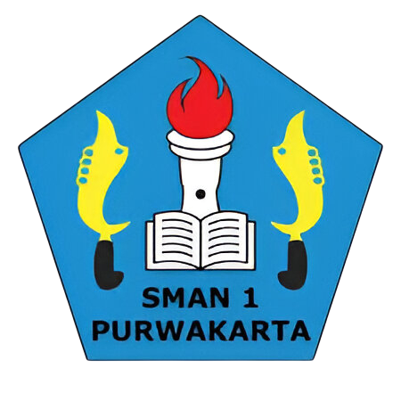

Selamat datang di website portofolio pertamaku! Semoga kalian suka, ya! Terima kasih!
KRITIK & SARAN CONTACT MENama lengkapku Salwa Nurjanah, tapi teman-teman dekat lebih mengenaliku dengan nama NJ atau singkatan dari kata Nur - Janah. Dulu aku bermimpi menjadi Duta Besar Indonesia, tetapi mimpi itu hanya bertahan sampai aku duduk di bangku kelas 1 SMA. Selepas itu, aku mulai tertarik dengan dunia Forensik dan IT. Namun, untuk menjadi Forensik terlalu tidak mungkin untuk ku kejar, sehingga aku memilih IT sebagai fokus utamaku. Kebetulan ada pamanku yang cukup paham mengenai IT dan mendukungku untuk membulatkan tekad. Kini, walaupun jalannya tidak mudah dan cukup banyak kesulitan yang aku hadapi, tapi aku yakin. Jika aku bisa mewujudkan mimpiku dan menjadi Software Engineer.
 
